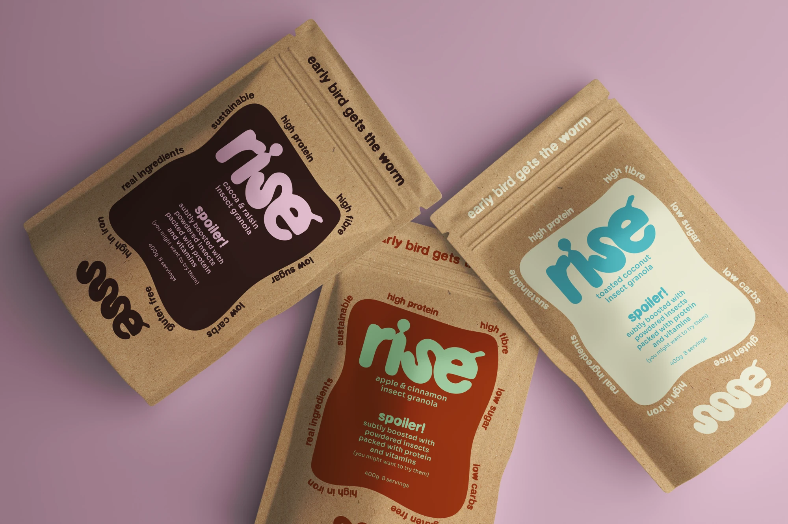
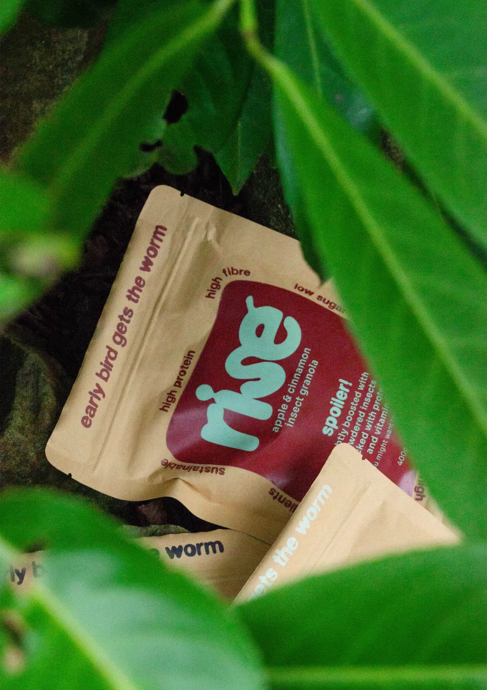
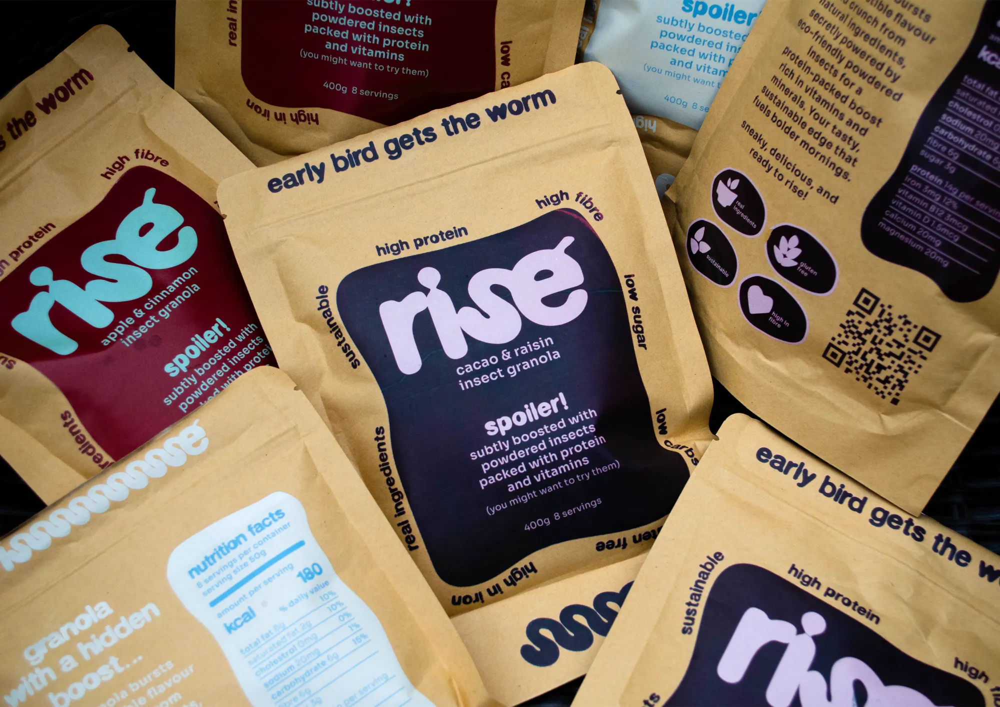
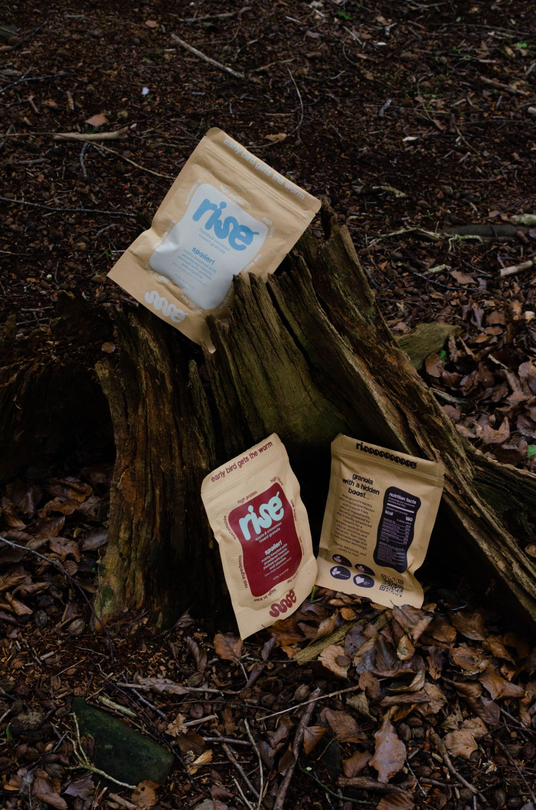
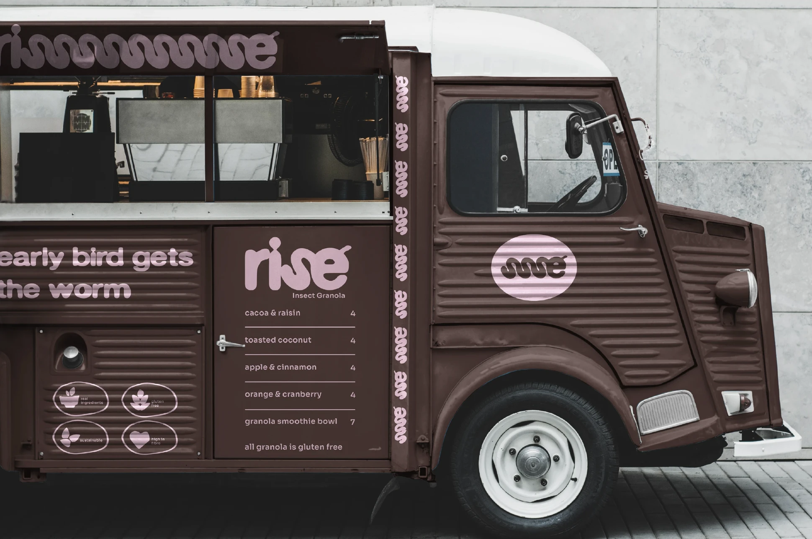
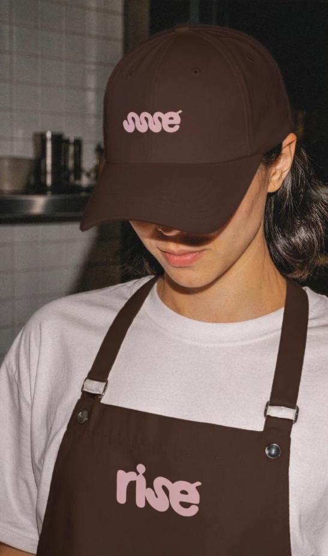
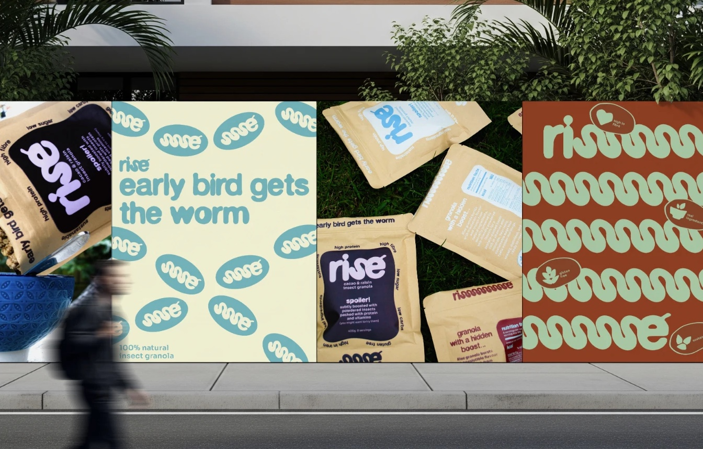
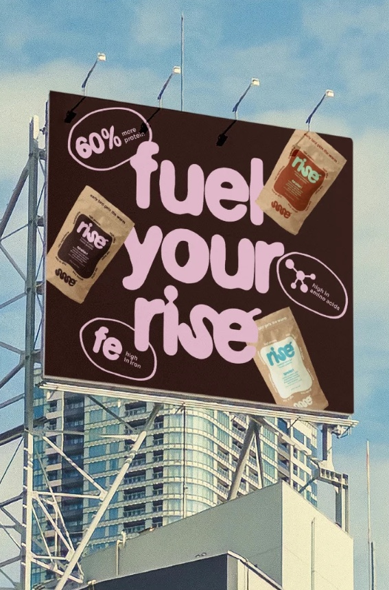

Project:
rise
A playful, sustainable identity and packaging for an insect protein granola that makes better breakfasts easy.
- Project type
- Live brief
- Industry
- Insect granola
- Year
- 2025
- Services
- Brand identity / Visual direction / Packaging

Challenges:
Insects are one of the most sustainable sources of protein, but for most people the idea of eating them is a hard no. rise needed to win over a sceptical audience, reducing the stigma around entomophagy so an insect-powered granola feels like a trusted breakfast, not a novelty.



Solution:
We made typography the brand’s main visual language. Soft, wriggling letterforms that echo a worm turn the insect story into something bold, playful and approachable, while warm colours, kraft pouches and honest messaging keep rise familiar and easy to enjoy.


Result:
rise makes eating insects feel normal: a high-protein breakfast people actually want to try.


Got a brand that needs a story? Let’s talk.
Start a projectMore projects:


We look forward to working with you. Start a project or book a discovery call and we can get started straight away.